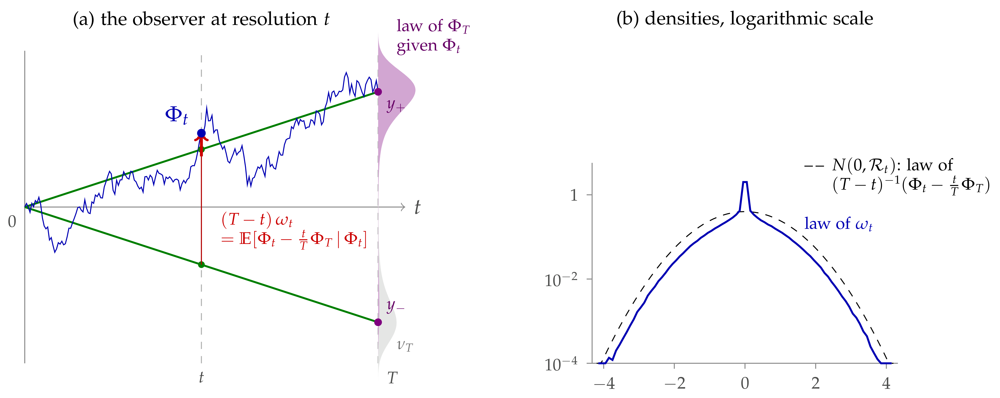

|
Figure A.1. The terms \(k = 1, 2,
3, 4\) of |
|
Abstract
We continue Lecture 4 with the observables of the interacting theory. Rotating the Minkowski field equation to Euclidean space gives the Dyson–Schwinger equation, whose noise, Nelson's Euclidean noise, is the transpose of the functional derivative and is fixed by the law of the field. Conditioning on the scales rather than on the neighbours, the field equation holds at every resolution, with a noise which is a conditional expectation of Nelson's noise. This noise is sub-Gaussian whatever the interaction (an observation which, as far as we know, is new, and which is the key input of the a priori estimates of Lecture 7), and the Dyson–Schwinger equation takes a pathwise form, an identity between stochastic observables. We then discuss the passage to infinite volume. The appendices contain the algebra of the flow, perturbation theory and counterterms, and the functional inequalities that follow from the localisation. The treatment is formal: we compute as if all objects were smooth and integrable, and we indicate where the real difficulties lie.
The results presented in Lectures 4–7 were obtained recently, with the use of AI, in collaboration with Sarah-Jean Meyer.
Introduction 2
Structure 2
What is formal 2
Conventions 2
Acknowledgements 2
Main lecture 2
9Observables and field equations 2
9.1Observables of the interacting theory 2
Tangent observables 3
9.2Field equations, from Minkowski to Euclidean 3
The Minkowski field equation 3
Euclidean rotation 3
The noise is the transpose of the derivative 4
Nelson's Markov field equation 4
A Gaussian noise gives the wrong field 5
Conditioning on the scales 5
9.3The field equation at every resolution 5
The DS equation as an identity between observables 6
The field equation for the forecast 7
9.4Gaussian bounds for the noise 8
One mode: the Brownian bridge 8
The general case 9
What the observer cannot resolve 10
A new observation 10
The roughness of the noise 11
The noise as a stochastic observable 11
Control of the force 12
Consequence for \(\Phi^4_3\) 12
9.5Infinite volume 12
Differences of free energies 13
Exercises 14
Appendices: additional material 14
Appendix AAlgebraic structure of the Polchinski flow 14
A.1A semigroup of renormalisation maps 14
A.2Perturbation theory and counterterms 15
Exercises 16
Appendix BStochastic localisation 16
Why it is useful 16
B.1Log-Sobolev inequalities along the localisation 17
Entropy as quadratic variation 17
In terms of the conditional covariance 17
An application: the KLS conjecture 18
The connection with Bauerschmidt–Bodineau 19
Exercises 19
References 19
Lecture 4 generated the interacting measure in three ways, renormalisation, optimal control and filtering, and found that they produce the same forward–backward system (7.7) for the field \(\Phi\) and the force \(F\). In this lecture we study the observables of the interacting theory and its field equation. We use the notation of Lecture 4 throughout: the interaction (7.1) with its counterterm \(\gamma_T\), the effective potential \(V_t\) (7.3) and the force \(F_t = - \mathrm{D} V_t (\Phi_t)\), the effective average action \(\Gamma_t\) of Section 8.6 and its Wetterich equation (8.13), \(S_t = Q_T - Q_t = Q_{T, t}\), \(K = Q_T^{- 1}\), \(J_t = KQ_t\), the regulator \(\mathcal{R}_t = S_t^{- 1} - K\), the bridge representation (7.14), the forecast \(\psi_t =\mathbb{E}_t [\Phi_T]\) and the conditional covariance \(\text{Cov}_t\). Sections 7 and 8 are in Lecture 4, and references to them point there.
In Lecture 3 the primary objects were the stochastic observables, martingales in the filtration of finite-resolution measurements [BCG26]. The filtering point of view makes this natural: an observable is a posterior mean \(\mathbb{E}_t [G (\Phi_T)]\). We have already met the force \(F_t\) and the forecast \(\psi_t\), and the field \(\Phi_t\) is not one of them. This section develops the language for the interacting theory, and then draws the main consequence of the filter: a field equation at every resolution, with a noise whose moments are controlled a priori.
For a functional \(G\) of the terminal field, the observable \(O_t =\mathbb{E}^{\mathbb{P}}_t [G (\Phi_T)]\) is \(O_t = G_t (\Phi_t)\), with
| \(\displaystyle G_t (\phi) = \mu_t^{\phi} (G) = \mathrm{e}^{V_t (\phi)} \int G (\phi + \zeta) \hspace{0.17em} \mathrm{e}^{- V_T (\phi + \zeta)} \mu^{Q_{T, t}} (\mathrm{d} \zeta) .\) | (9.1) |
Formally, \(G_t\) solves the backward Kolmogorov equation of the interacting dynamics,
| \(\displaystyle \partial_t G_t + \tfrac{1}{2} \text{Tr} (\dot{Q}_t \mathrm{D}^2 G_t) - \langle \dot{Q}_t \mathrm{D} V_t, \mathrm{D} G_t \rangle = 0, \qquad G_T = G,\) | (9.2) |
which is the Doob transform of the Gaussian heat equation by
\(\mathrm{e}^{- V_t}\) (Exercise 9.1). Conversely, any
solution of
| \(\displaystyle \partial_{\theta} \mathbb{E}^{\nu^{\theta}_T} [G] = - \text{Cov}^{\nu_T^{\theta}} (G, \partial_{\theta} V^{\theta}_T) .\) | (9.3) |
Thus the tangent observables, such as the running \(: \varphi^4\): for \(\theta = \lambda\) (together with the derivative of the counterterm \(\partial_{\lambda} \gamma_T \int : \varphi^2\):), describe the response of the theory to a change of coupling. They are the observables conjugate to the coordinates of theory space.
with \(V' (\varphi) = \frac{\lambda}{3} \varphi^3\) suitably renormalised. What it says about correlation functions is best seen on the time-ordered functions
When \(\partial_t^2\) acts on the time ordering, it also differentiates the step functions \(\theta (t - t_j)\). The first derivative produces the equal-time commutators \([\varphi (t, \textbf{x}), \varphi (t, \textbf{x}_j)]\), which vanish, and the second the commutators
Formally,
where \(\hat{x}_j\) means that \(x_j\) is omitted. The field equation holds as an identity between operators, and the contact terms are the trace of the canonical commutator. Since \(\mathrm{i} [\partial_t \varphi (t, \textbf{x}), \cdot]\) acts on functions of the fields at time \(t\) as the functional derivative \(\delta / \delta \varphi (t, \textbf{x})\), the contact terms are a derivative acting on the other fields.
so the factor \(- \mathrm{i}\) of the contact terms becomes \(+ 1\):
This is the Dyson–Schwinger hierarchy of Lecture 2 (Remark 3.15). For a random field \(\varphi\) with law \(\nu\), passing from products \(G = \varphi (x_1) \cdots \varphi (x_n)\) to cylinder functionals by linearity and density, it reads
| \(\displaystyle \mathbb{E}^{\nu} [G \hspace{0.17em} \langle h, \omega \rangle] =\mathbb{E}^{\nu} [\mathrm{D}_h G], \qquad \omega := A \varphi + V' (\varphi) .\) | (9.5) |
and
The noise is the transpose of the functional derivative applied to the constant \(1\), that is minus the score of \(\nu\): for
in finitely many dimensions, \(\omega = - \mathrm{D} \hspace{0.17em} \log (\mathrm{d} \nu / \mathrm{d} \varphi)\). This is how the canonical commutator survives the rotation. In Minkowski space the contact terms come from a commutator, which acts as a derivative, and the field equation holds exactly. In Euclidean space they come from integration by parts, and the field equation acquires the term that turns the derivative into its transpose. So the noise is not an independent input, as in a stochastic PDE: it is a functional of the field, fixed by its law. For the free field
is the Gaussian field with covariance \(A\), i.e. \(\omega = A^{1 / 2} \xi\) for a white noise \(\xi\): one derivative of white noise. For an interacting field it is not Gaussian.
while its fourth moment shows that it is not Gaussian. In fact
\(\varepsilon^d \omega (x)\) is minus the score of the conditional law
of \(\varphi (x)\) given its neighbours: the Markov property localises
the noise. Nelson argued, heuristically, that a smeared \(\omega\) is a
random variable if and only if \(\mathbb{E} [V'' (\varphi (x))]\) stays
finite in the continuum limit, that is if the cube can be Wick ordered
with respect to the interacting vacuum, and he judged this unlikely in
\(d = 3\). This agrees with Remark 9.5: the regularised
logarithmic derivatives of \(\Phi^4_3\) do not converge in \(L^2\) [ALZ06]. The noise of
with \(\xi\) a Gaussian white noise, for a Wick cube with a spatial cutoff and a small coupling (chiefly in \(d = 2\)), and for Wick exponentials. The method is a nonlinear change of variables on the abstract Wiener space of the free field: \(\mathcal{T} (\psi) := \psi + A^{- 1} V' (\psi)\) is a free field. Formally, changing variables in the free field measure \(\mu^{A^{- 1}}\),
This is not \(\mathrm{e}^{- V} \mu^{A^{- 1}}\), as the authors point out for the cutoff \(\Phi^4_2\) measure ([AY02], Remark 2.3): the second term of the exponent and the determinant are nonlocal, the Markov property is lost, and the construction does not yield a reflection positive field. Reflection positivity is obtained only on the subspace of functionals of \(\mathcal{T} (\psi)\), which is a free field ([AY02], Theorem 4.1 and Remark 4.1). The noise of a Euclidean field theory cannot be prescribed: it is the transpose of the derivative for the very measure one is constructing, and this forces it to be non-Gaussian.
By (7.14) the field at resolution \(t\) is a blurred copy of the terminal field, \(\Phi_t = J_t \Phi_T + \zeta_t\). The noise \(\zeta_t\) is not observed, but its posterior mean is, \(\mathbb{E}_t \zeta_t = \Phi_t - J_t \psi_t\). Since \(\psi_t = \Phi_t + S_t F_t\) and \(1 - J_t = KS_t\), its rescaling \(S_t^{- 1} \mathbb{E}_t \zeta_t = K \Phi_t - J_t F_t\) is the noise observable \(\omega_t\) below. This gives a field equation at every resolution.
Theorem
| \(\displaystyle \omega_t := K \Phi_t - J_t F_t\) | (9.6) |
is a centred \(\mathbb{P}\)-martingale, with
For every \(t \leqslant T\), every \(h\) and every functional \(G\),
At \(t = T\) this is the Dyson–Schwinger equation of \(\nu_T\),
Proof. From (7.6) and \(\dot{J}_t = K \dot{Q}_t\),
The drift cancels, \(F\) is a martingale and \(\omega_0 = 0\). For
Take \(k = Kh\), so that \(Q_t k = J_t h\), and recall \(F_t = - \mathrm{D} V_t (\Phi_t)\).\(\Box\)
At \(t = T\), \(J_T = 1\) and \(F_T = - \mathrm{D} V_T (\Phi_T)\), so
is Nelson's Euclidean noise
| \(\displaystyle \omega_t =\mathbb{E}_t [K \Phi_T + \mathrm{D} V_T (\Phi_T)] :\) | (9.9) |
the noise at resolution \(t\) is what an observer at resolution \(t\) can know of the Euclidean noise. Nelson's \(\omega (x)\) is centred given the field at the neighbouring sites; here \(\omega_T - \omega_t\) is centred given the field at the coarser scales.
Proposition
| \(\displaystyle N_t := \mathrm{D}_{J_t h} G_t (\Phi_t) - G_t (\Phi_t) \hspace{0.17em} \langle h, \omega_t \rangle\) | (9.10) |
is a \(\mathbb{P}\)-martingale on \([0, T]\) with \(N_0 = 0\). Equivalently, \(N_t =\mathbb{E}_t \left[ \mathrm{D}_h G (\Phi_T) - G (\Phi_T) \hspace{0.17em} \langle h, \omega_T \rangle \right]\).
Proof. \(N_0 = 0\) because \(J_0 = 0\) and
\(\omega_0 = 0\). Differentiate
Formally letting \(T \to \infty\), \(K \to A\), and
| \(\displaystyle A \Phi_t = AQ_t \hspace{0.17em} F_t + \omega_t,\) | (9.11) |
with \(AQ_t = \mathrm{e}^{- A / t^2}\) for the heat profile. This is the
Euclidean field equation \(A \varphi = - V' (\varphi) +\)noise of
Lectures 1–2, seen at resolution \(t\).
It needs no products of distributions: the nonlinearity enters only
through the force observable \(F_t\), smeared at scale \(1 /
t\). For the GFF (\(F = 0\)),
| \(\displaystyle K \psi_t = F_t + \omega_t, \qquad F_t = - \mathrm{D} \Gamma_t (\psi_t) = - \mathrm{D} V_t (\Phi_t) .\) | (9.12) |
As \(T \to \infty\) the two forms of the field equation at resolution \(t\) are
In the first, the force is smeared by \(\mathrm{e}^{- A / t^2}\) so the nonlinearity is seen only through a smoothing operator. In the second it acts on the same variable as the linear part, with no smoothing: this is the Euler–Lagrange equation of the action
forced by the noise \(\omega_t\). For \(\Phi^4\), at finite \(T\) and to first order in \(\lambda\), the Wetterich equation (8.13) gives
and since \(\partial_c H_4 = - 6 H_2\) and \(c_T - S_t (x, x) = c_t\), the one loop moves the Wick ordering from the cutoff to the resolution:
The cube acts directly on the forecast, and pairing with \(\psi_t\) gives
where \(a^4 - 3 c_t a^2 \geqslant \frac{1}{2} a^4 - \frac{9}{2} c_t^2\) and \(c_t\) is finite at fixed \(t\): heuristically, a coercive bound up to a volume constant, driven by the sub-Gaussian noise of Section 9.4. With the bare Wick ordering \(c_T\) the quadratic term would diverge; in \(d = 3\) only the mass counterterm \(\gamma_T\), of order \(\lambda^2\), still does. In the form for \(\Phi_t\) the same positivity is hidden behind \(\mathrm{e}^{- A / t^2}\).
The integration by parts formula
The direction of differentiation is now random, the conditional covariance applied to \(\mathcal{R}_t h\).
Remark
Corollary
| \(\displaystyle \mathbb{E} [G \langle \omega_t, h \rangle] =\mathbb{E} \sum_{i = 1}^k (\partial_i g) (\cdots) \langle J_{t_i} h, h_i \rangle, \) | (9.13) |
that is, the derivative of \(G\) in the direction which shifts the field at each scale \(s\) by \(J_s h\). The increments are consistent: \(\mathbb{E} [G \langle \omega_t - \omega_s, h \rangle] = 0\) for \(t_k \leqslant s \leqslant t\).
Proof. \(G\) is \(\mathcal{F}_t\)-measurable, so \(\mathbb{E} [G \langle \omega_t, h \rangle] =\mathbb{E} [G \langle S_t^{- 1} \zeta_t, h \rangle]\). By (7.14), \(\Phi_s = J_s \Phi_T + \zeta_s\), the bridge covariance is \(\mathbb{E} [\zeta_s \otimes \zeta_t] = Q_s KS_t\) for \(s \leqslant t\), so the covariance of \(\langle S_t^{- 1} \zeta_t, h \rangle\) and \(\langle \zeta_s, k \rangle\) is \(\langle J_s h, k \rangle\). Apply Gaussian integration by parts in \(\zeta\), given \(\Phi_T\). The last claim is the martingale property of \(\omega\).\(\Box\)
Remark
The noise observable \(\omega_t\) is not Gaussian: it depends on the
unknown law of the interacting field. It is a conditional expectation in
two ways. In
By (7.14) its position at time \(t\) is a point of the straight line from \(0\) to \(y\), plus a Gaussian deviation:
Then \(K \Phi_t - J_t F_t = \zeta_t / (T - t)\): with a known endpoint the noise is the rescaled deviation from the straight line, a centred Gaussian with variance \(t / (T (T - t)) = (T - t)^{- 1} - T^{- 1} =\mathcal{R}_t\), whatever \(y\). Now let the endpoint be random, with law \(\nu_T\). The observer at resolution \(t\) sees \(\Phi_t\), but not the line the path is following. The drift becomes the posterior mean of the bridge drift, and the noise the posterior mean of the rescaled deviation,
an average of Gaussian deviations, weighted by the posterior law of the endpoint (Figure 9.1, Exercise 9.6). Equivalently \(J_t F_t = K \Phi_t - \omega_t\), i.e. \(F_t = \Phi_t / t - (T / t) \omega_t\). The dictionary with the field is:
one mode
field
resolved covariance
\(t\)
\(Q_t\)
prior precision
\(1 / T\)
\(K = Q_T^{- 1}\)
attenuation
\(t / T\)
\(J_t = KQ_t\)
unresolved covariance
\(T - t\)
\(S_t = Q_T - Q_t\)
bridge deviation
\(\zeta_t \sim N (0, t (T - t) / T)\)
\(\zeta_t \sim N (0, Q_t (1 - J_t))\)
regulator
\(\frac{t}{T (T - t)}\)
\(\mathcal{R}_t = S_t^{- 1} - K\)
force
\(\mathbb{E}_t [(\Phi_T - \Phi_t) / (T - t)]\)
\(F_t =\mathbb{E}_t [S_t^{- 1} (\Phi_T -
\Phi_t)]\)
noise
\(\mathbb{E}_t [(\Phi_t - \frac{t}{T} \Phi_T) / (T -
t)]\)
\(\omega_t =\mathbb{E}_t [S_t^{- 1} \zeta_t]\)
 |
Figure 9.1. The noise as a posterior mean, for one mode with \(Q_t = t\), \(T = 1\), \(t = 1 / 2\), and the double-well terminal law \(\nu_T (\mathrm{d} y) \propto \mathrm{e}^{- 2 y^4 + 6 y^2} N (0, 1) (\mathrm{d} y)\) (grey, at time \(T\)). (a) A path observed up to time \(t\) (the faded part is not seen). For each possible endpoint \(y_{\pm}\) the bridge follows the straight line \(s \mapsto sy_{\pm} / T\) (green), and \(\Phi_t\) deviates from it by a Gaussian amount. The observer weighs the endpoints by their posterior law given \(\Phi_t\) (violet), and \((T - t) \omega_t\) is the posterior mean of the deviation (thick arrow). (b) The law of \(\omega_t\) (solid) has thinner tails than the Gaussian \(N (0, \mathcal{R}_t)\) of the deviation with a known endpoint (dashed): averaging thins the tails. The peak at \(0\) comes from the fields between the wells, where a small change of \(\Phi_t\) moves the posterior from one well to the other and \(\omega_t\) hardly changes, since the jump of the posterior mean compensates the motion of \(\Phi_t\): a fold of the map \(\Phi_t \mapsto \omega_t\) (Exercise 9.6(c)). |
and since \(J_t Q_t^{- 1} = K\),
| \(\displaystyle \omega_t = - J_t \mathrm{D} \log p_t (\Phi_t) . \) | (9.14) |
The noise is minus the score of the law of the field at resolution \(t\), seen through \(J_t\).
Only deterministic covariance operators, all functions of \(A\), are commuted below. The variance that appears is the regulator (8.6) of the Wetterich equation: since \(S_t = Q_T (1 - J_t)\),
| \(\displaystyle J_t^2 (Q_t (1 - J_t))^{- 1} = KJ_t (1 - J_t)^{- 1} = S_t^{- 1} - Q_T^{- 1} =\mathcal{R}_t . \) | (9.15) |
Proposition
and \(\omega_t\) is dominated in the convex order by \(N (0, \mathcal{R}_t)\):
\(\Xi \sim N (0, \mathcal{R}_t)\), for every convex \(\Psi\) for which both sides are defined. In particular, for every \(h\) and \(u \in \mathbb{R}\),
| \(\displaystyle \mathbb{E} \mathrm{e}^{u \langle h, \omega_t \rangle} \leqslant \exp \left( \frac{u^2}{2} \langle h, \mathcal{R}_t h \rangle \right) : \) | (9.16) |
every smeared noise observable is centred and sub-Gaussian, with the regulator as variance and with no convexity assumption on the interaction.
Proof. Write \(\Sigma_t = Q_t (1 - J_t)\), so that \(J_t \Sigma_t^{- 1} = S_t^{- 1}\), and \(g\) for the density of \(N (0, \Sigma_t)\). Then
and \(\mathrm{D} g (z) = - \Sigma_t^{- 1} z \hspace{0.17em} g (z)\), so
apply \(J_t\) and use
and \(S_t^{- 1} \zeta_t\) is centred Gaussian with covariance \(S_t^{- 1} \Sigma_t S_t^{- 1} =\mathcal{R}_t\).\(\Box\)
| \(\displaystyle \text{Cov} (\omega_t) =\mathcal{R}_t - S_t^{- 1} J_t \mathbb{E} [\text{Cov}_t] J_t S_t^{- 1},\) | (9.17) |
with \(\text{Cov}_t = \text{Cov} (\Phi_T |\mathcal{F}_t)\). The noise is
the free bridge noise minus what the observer cannot resolve. The two
extremes are the free field, where \(\text{Cov}_t = S_t\) and
the free value, corrected by the mean curvature of the effective potential. This is the analogue at resolution \(t\) of Nelson's covariance \(- \Delta + m^2 +\mathbb{E} [V'' (\varphi)]\), and here it is finite at every resolution. Proposition 9.6 is the same comparison for all convex functions, rather than for the variance alone.
For the heat profile (compare (8.15)), \(K = A \mathrm{e}^{A / T^2}\) and \(J_t = \mathrm{e}^{- A (t^{- 2} - T^{- 2})}\) give
(Exercise 9.5). At a finite spatial cutoff all of this holds with terminal resolution \(T = \infty\), before any continuum measure is constructed.
Since \(x / (\mathrm{e}^x - 1) \leqslant \mathrm{e}^{- x / 2}\),
\(\mathcal{R}_t \leqslant t^2 \mathrm{e}^{- A / 2 t^2}\): at resolution
\(t\) the noise is no larger than \(t\) times a white noise smoothed at
scale \(1 / t\). Pointwise, \(\operatorname{Var} \hspace{0.17em}
\omega_t (x) \leqslant \mathcal{R}_t (x, x)
\lesssim t^{d + 2}\), i.e.
\(\omega_t (x) = O (t^{1 + d / 2})\). This is the size at scale \(1 /
t\) of a distribution of regularity \(- 1 - d / 2\) (\(- 5 / 2\) in \(d
= 3\)): seen at its own resolution, the noise is one derivative rougher
than white noise (\(- d / 2\)) and two rougher than the GFF (\(1 - d /
2\)), the same as the GFF noise \(A \varphi = A^{1 / 2} \xi\) of the
Dyson–Schwinger equation, whatever the interaction. It is not a
bound on a limit distribution: \(\omega_t\) is a martingale in \(t\),
not the smoothing of a fixed distribution, and on a fixed test function
This is the sense in which the Euclidean field equation of \(\Phi^4_3\) has a well-defined sub-Gaussian noise: it exists as a stochastic observable, without a terminal representative.
Remark
is convex, so Proposition 9.6 dominates \(\| \omega_t \|_{\varepsilon}\) by \(\| \Xi \|_{\varepsilon}\), with \(\Xi \sim N (0, \mathcal{R}_t)\). For this Gaussian field, \(\mathcal{R}_t (x, x) \lesssim t^{d + 2}\) and
so Dudley's bound and Gaussian concentration give Gaussian tails for \(\| \Xi \|_{\varepsilon}\) at the level \(t^{1 + d / 2} \sqrt{\log (2 + t)}\), uniformly in \(L\). Since \(\omega\) is a martingale, \(\| \omega_s \|_{\varepsilon}\) is a submartingale, and Doob's inequality extends the tails to \(\sup_{s \leqslant t}\). Summing over dyadic \(t\), almost surely, with a random constant \(\tilde{C}\),
with \(\tilde{C}\) having Gaussian tails uniformly in the interaction and in the spatial cutoff. This is a pathwise bound at each resolution, in the sense above.
so
Itô's isometry, \((a + b)^2 \leqslant 2 a^2 + 2 b^2\) and
| \(\displaystyle \mathbb{E} \int_0^t \| \Upsilon_s^{\ast} J_s h \|^2 \mathrm{d} s \leqslant 2 \langle h, \mathcal{R}_t h \rangle + 2 \langle h, KQ_t Kh \rangle . \) | (9.18) |
For the heat profile with \(T = \infty\), \(KQ_t K = A \mathrm{e}^{- A / t^2} \leqslant t^2 / \mathrm{e}\), so the right-hand side is at most \(2 (1 + \mathrm{e}^{- 1}) t^2 \|h\|_{L^2}^2\). This controls a smoothed derivative of the force, \(\Upsilon_s = \mathrm{D} F_s (\Phi_s) \dot{Q}_s^{1 / 2}\), without any estimate on the terminal force.
On \(\mathbb{T}^d_L\) the free energy \(V_0 (0)\) and the effective potential \(V_t\) are extensive: they grow like \(L^d\), and (7.9) has no limit as \(L \to \infty\). Three objects are intensive and survive formally:
the force. For a local interaction \(V_T (\varphi) = \int v_T (\varphi (x)) \mathrm{d} x\), \(\mathrm{D} V_T (\varphi) (x) = v_T' (\varphi (x))\), and (7.7) reads, on \(\mathbb{R}^d\),
| \(\displaystyle \Phi_t = \int_0^t \dot{Q}_s F_s \hspace{0.17em} \mathrm{d} s + \int_0^t \dot{Q}_s^{1 / 2} \mathrm{d} W_s, \qquad F_t (x) = -\mathbb{E}_t [v_T' (\Phi_T (x))] .\) | (9.19) |
Here every quantity is local, and the equation makes sense without
a volume cutoff. Infinite-volume limits of \(\nu_T^{(L)}\) are
expected to be laws of solutions of
the Burgers flow (8.1) of the force, for the same reason;
differences of free energies. For a local \(f\),
\(\mathcal{W}_T^{(L)} (f)\) in (7.12) is a difference
of two extensive infima, and it stays bounded as \(L \to \infty\).
Its variational characterisation, through the infinite-volume
Euler–Lagrange equation
Proposition
where the infimum runs over adapted \(w\) with \(\mathbb{E} \int_0^T \|w_s \|^2 \mathrm{d} s < \infty\), and
is the remainder of the first-order Taylor expansion of \(V\). The minimiser satisfies \(w_s = - \dot{Q}_s^{1 / 2} \mathbb{E}_s [\mathrm{D} f (\Phi^f_T) + \mathrm{D} V_T (\Phi^f_T) - \mathrm{D} V_T (\Phi_T)]\), with \(\Phi^f = \Phi + I (w)\): the perturbed field solves the FBSDE with terminal potential \(V_T + f\), and its force is that of \(\Phi\) corrected by \(F^f_s - F_s = -\mathbb{E}_s [\mathrm{D} f (\Phi^f_T) + \mathrm{D} V_T (\Phi^f_T) - \mathrm{D} V_T (\Phi_T)]\).
Proof. By (7.12), the left-hand side is \(\inf_u J_f (u) - J_0 (u^{\ast})\), with
Writing \(u = u^{\ast} + w\) and expanding \(\frac{1}{2} \|u^{\ast} + w\|^2\), the terms \(V_T (\Phi_T)\) and \(\frac{1}{2} \int \|u^{\ast} \|^2\) cancel against \(J_0 (u^{\ast})\), and the cross term is computed above. The first-order condition in \(w\) is obtained as in (7.11).\(\Box\)
For a local interaction \(V_T (\varphi) = \int v_T (\varphi (x)) \mathrm{d} x\),
and \(b_T (a, 0) = 0\). So every term of
an infinite-volume measure is the law of \(\Phi_T\) for a solution
\(\Phi\) of
The Laplace functionals in
The coercive estimates must then be local: one uses weighted norms and needs bounds whose constants do not depend on the volume. This infrared problem is the analogue, for the scale dynamics, of the “coming down from infinity” estimates for the parabolic dynamics.
Exercise
Exercise
Exercise
Exercise
Exercise
Exercise
Exercise
For a positive covariance \(S\) define the renormalisation map
| \(\displaystyle \mathfrak{R}_S (V) := - \log (\mu^S \ast \mathrm{e}^{- V}), \qquad (\mu^S \ast u) (\phi) = \int u (\phi + \zeta) \mu^S (\mathrm{d} \zeta) .\) | (A.1) |
Since \(\mu^S \ast \mu^{S'} = \mu^{S + S'}\),
| \(\displaystyle \mathfrak{R}_S \circ \mathfrak{R}_{S'} =\mathfrak{R}_{S + S'} =\mathfrak{R}_{S'} \circ \mathfrak{R}_S, \qquad V_t =\mathfrak{R}_{Q_{T, t}} (V_T) .\) | (A.2) |
So the effective potentials are an orbit of an abelian semigroup, indexed by the cone of positive covariances, acting nonlinearly on interactions and linearly on Boltzmann factors \(\mathrm{e}^{- V}\). Its infinitesimal generators are the vector fields
and (7.8) reads \(\partial_t V_t = -\mathcal{P}_{\dot{Q}_t} (V_t)\).
Proposition
Proof. (a) Differentiate \(\mathfrak{R}_{sB}
\mathfrak{R}_{rB'} =\mathfrak{R}_{rB'} \mathfrak{R}_{sB}\) at \(s = r =
0\), or compute directly (Exercise A.1). (b) is
Different profiles with the same endpoints are different coordinate systems on the same renormalisation group trajectory. They change the process \(\Phi\) and the observables at intermediate resolution, but not the terminal theory. The flow has no holonomy [BCG26].
Expanding \(V_t =\mathfrak{R}_{Q_{T, t}} (V_T)\) in cumulants of the Gaussian increment \(\zeta \sim \mu^{Q_{T, t}}\) gives
| \(\displaystyle V_t (\phi) =\mathbb{E}_{\zeta} [V_T (\phi + \zeta)] - \tfrac{1}{2} \text{Var}_{\zeta} (V_T (\phi + \zeta)) + \ldots\) | (A.4) |
For (7.1), Exercise 6.1 of Lecture 3 shows that Gaussian convolution simply lowers the Wick ordering: since \(Q_{T, t} (x, x) = c_T - c_t\),
| \(\displaystyle V_t (\phi) = \int \left[ \frac{\lambda}{12} H_4 (\phi (x) ; c_t) + \gamma_T H_2 (\phi (x) ; c_t) \right] \mathrm{d} x + O (\lambda^2) .\) | (A.5) |
Here \(\gamma_T = O (\lambda^2)\) is kept for later use. At first order the effective potential is the Wick-ordered potential at the current resolution. This is the dual statement of Proposition 6.1 of Lecture 3: \(\int H_4 (X_t ; c_t)\) is an observable.
Proposition
up to \(O (\lambda^3)\).
Proof. By the binomial formula for Hermite polynomials,
Then compute the variance in
|
|
Figure A.1. The terms \(k = 1, 2,
3, 4\) of |
Now let \(T \to \infty\) at fixed \(t\), so that \(S \to C - Q_t\), which near the diagonal is as singular as \(G\). In \(d = 2\) every \(S^k\) is locally integrable, so with \(\gamma_T = 0\) every term has a limit: Wick ordering suffices. In \(d = 3\), \(G (z) \sim (4 \pi |z|)^{- 1}\):
\(k = 1, 2\): \(S\) and \(S^2\) are locally integrable. These terms are finite and nonlocal.
\(k = 3\) (the sunset): \(S^3 \sim |z|^{- 3}\) is not integrable. Writing \(\phi (x) \phi (y) = \frac{1}{2} (\phi (x)^2 + \phi (y)^2) - \frac{1}{2} (\phi (x) - \phi (y))^2\), up to a field-independent constant the divergent part is local:
with \(\int S^3 \sim \frac{1}{16 \pi^2} \log T\). It is cancelled by
| \(\displaystyle \gamma_T := \frac{\lambda^2}{3} \int_{\mathbb{T}^3_L} Q_T (z)^3 \hspace{0.17em} \mathrm{d} z = \frac{\lambda^2}{48 \pi^2} \log T + O (1),\) | (A.7) |
since \(\gamma_T - \frac{\lambda^2}{3} \int S^3\) converges (Exercise A.2).
\(k = 4\): a divergent constant \(- \frac{\lambda^2}{12} L^3 \int S^4 \sim T\), the vacuum energy. It cancels in \(\nu_T\) but not in the free energy.
Power counting (Exercise A.3) shows that no further field-dependent counterterms are needed in \(d = 3\): \(\Phi^4_3\) is superrenormalisable. Thus renormalisation appears as a property of the flow: one chooses the terminal data \(V_T\) so that the effective potentials \(V_t\) at fixed resolution have limits. The divergences at second order are also related to the singularity of \(\Phi^4_3\) with respect to the GFF [BG21]: the measures \(\nu_t\) at fixed \(t\) are expected to stay absolutely continuous with respect to \(\mu^{Q_t}\), while the terminal one is not.
Exercise
Exercise
Exercise
Proposition 7.2 and Section 7.3 say that the Polchinski process is a stochastic localisation of \(\nu_T\). This appendix records why that decomposition is useful, and what it proves.
It is a martingale. \(\nu_T =\mathbb{E} \mu_t^{\Phi_t}\), and the expectation of any test function under \(\mu_t^{\Phi_t}\) is a martingale. Itô calculus then splits variance and entropy exactly into the part already revealed and the part still hidden.
The pieces are simpler. The Gaussian factor adds \(\mathcal{R}_t\) to the Hessian of the potential. If \(\nu_T\) is log-concave, \(\mu_t^{\phi}\) is \(\mathcal{R}_t\)-uniformly log-concave, so Bakry–Émery and Brascamp–Lieb apply to it even when their constants are useless for \(\nu_T\) itself.
One quantity controls the loss. What is revealed per unit resolution is governed by \(\operatorname{Cov}_t\), whose evolution (8.9) is explicit. An inequality for \(\nu_T\) reduces to showing that the localisation does not happen too fast.
The process can also be run as an algorithm: with an approximate force
it is a sampler, as in the algorithmic stochastic localisation of [EMS22], and denoising diffusions are of the same kind [Mon23]. By
Bauerschmidt and Bodineau [BB21] proved log-Sobolev inequalities by running the Polchinski flow (see the survey [BBD24]). In their language the renormalised measure at a given scale is the law of \(\Phi_t\), and the fluctuation measure is the conditional law \(\mu_t^{\Phi_t}\) of Proposition 7.2, i.e. the stochastic localisation of \(\nu_T\) [Eld23]. (Their scale parameter runs opposite to our resolution: their initial scale is our \(T\), where the renormalised measure is \(\nu_T\) and the fluctuation measure is trivial, and their integrated covariance is our \(S_t\).) In this dictionary their argument is an entropy computation along our filtration.
and, stopping at resolution \(t\), the chain rule
the entropy already revealed at resolution \(t\) plus the expected entropy still hidden. The increments are controlled by the conditional law: differentiating the density of \(\mu_t^{\phi}\) in \(\phi\), \(\mathrm{D} G_t (\phi) = S_t^{- 1} \operatorname{Cov}_{\mu_t^{\phi}} (\rho, y)\).
Theorem
Then \(\nu_T\) satisfies the log-Sobolev inequality
The hypothesis gives, at each resolution, the gradient bound
inserted in the entropy formula it gives the theorem [BBD24]. For \(V_T = 0\) and a linear profile \(Q_t = tQ_T / T\) one may take \(\kappa = 0\), so \(1 / \varrho = T\) and the theorem is the Gaussian log-Sobolev inequality \(\operatorname{Ent} (\rho) \leqslant 2\mathbb{E} \langle D \sqrt{\rho}, Q_T D \sqrt{\rho} \rangle\). The hypothesis is a convexity condition on the effective potentials at every scale, not on \(V_T\), corrected by the scale dependence \(\ddot{Q}_t\) of the decomposition; \(\kappa_t\) may be negative at some scales: only the weights \(\mathrm{e}^{- 2 \int_t^T \kappa_r \mathrm{d} r}\) enter \(\varrho\).
If \(\dot{Q}_t\) is invertible, multiplying on the left by \(S_t \dot{Q}_t^{- 1} = \dot{\mathcal{R}}_t^{- 1} S_t^{- 1}\) and on the right by its transpose \(\dot{Q}_t^{- 1} S_t\) shows that it is equivalent to the explicit bound
| \(\displaystyle \operatorname{Cov}_{\mu_t^{\phi}} \leqslant S_t - S_t \dot{Q}_t^{- 1} \left( \kappa_t \dot{Q}_t - \frac{1}{2} \ddot{Q}_t \right) \dot{Q}_t^{- 1} S_t \qquad \forall \phi . \) | (B.1) |
The second derivative \(\ddot{Q}_t\) is not estimated: it is a property of the Gaussian decomposition, and it enters only through the combination \(\kappa_t \dot{Q}_t - \frac{1}{2} \ddot{Q}_t\). When \(Q_t\) and \(S_t\) are functions of one operator (Fourier multipliers, say), the right-hand side is \(S_t - S_t^2 \dot{Q}_t^{- 2} (\kappa_t \dot{Q}_t - \frac{1}{2} \ddot{Q}_t)\) mode by mode. If \(\kappa_t \dot{Q}_t > \frac{1}{2} \ddot{Q}_t\) (for the linear profile: \(\kappa_t > 0\)), every conditional law is strictly more concentrated than the unresolved Gaussian fluctuation; if not, \(\operatorname{Cov}_t\) may exceed \(S_t\), as in a double well at low resolution. A concave profile (\(\ddot{Q} \leqslant 0\)) makes the bound smaller but forces \(\kappa\) down by the same amount: for the Gaussian with \(Q_t = 1 - \mathrm{e}^{- t}\) one has \(\ddot{Q} = - \dot{Q}\), the hypothesis holds with \(\kappa = - \frac{1}{2}\), and \(\operatorname{Cov}_t = S_t\). The hypothesis is thus an upper bound on the conditional covariance, uniform in the conditioning, measured in the metric \(\dot{\mathcal{R}}_t\). Closely related is the entropic stability of Chen and Eldan [CE22] (see also [BBD24]): if, for all \(r \leqslant t\) and all \(\phi\), \(\dot{\mathcal{R}}_r \operatorname{Cov}_{\mu_r^{\phi}} \dot{\mathcal{R}}_r \leqslant \alpha_r \dot{\mathcal{R}}_r\), then
the total entropy is controlled by the entropy that is still hidden at resolution \(t\). The low-resolution part of the localisation is where the measure may be multimodal, and the condition says that it does not hide too much. With the Brascamp–Lieb bounds of Section 8.4 the conditional covariance is controlled by the Hessian of \(V_T\) when this is convex; for \(\Phi^4_3\) it is not, and the condition is a statement about the effective potentials, i.e. about the renormalisation group flow itself.
Proposition
If moreover \(\nu_T\) is log-concave, then
Proof. Let \(M_r =\mathbb{E}_r f (\Phi_T)\) and \(\chi_r =\operatorname{Cov}_{\mu_r^{\Phi_r}} (f, y)\). As in Section B.1, \(\mathrm{d} \langle M \rangle_r = \langle \chi_r, \dot{\mathcal{R}}_r \chi_r \rangle \mathrm{d} r\), so \(v (r) := \mathbb{E}\operatorname{Var}_{\mu_r^{\Phi_r}} (f)\) has \(v' = -\mathbb{E} \langle \chi_r, \dot{\mathcal{R}}_r \chi_r \rangle\) and \(v (0) =\operatorname{Var}_{\nu_T} (f)\). By Cauchy–Schwarz, with \(h = \dot{\mathcal{R}}_r \chi_r\), \(\langle \chi_r, h \rangle^2 \leqslant \operatorname{Var}_{\mu_r^{\Phi_r}} (f) \langle h, \operatorname{Cov}_r h \rangle \leqslant \alpha_r \operatorname{Var}_{\mu_r^{\Phi_r}} (f) \langle \chi_r, \dot{\mathcal{R}}_r \chi_r \rangle\). Hence \(v' \geqslant - \alpha_r v\), which gives the first bound. For the second, the Hessian of the potential of \(\mu_t^{\phi}\) is at least \(\mathcal{R}_t\): apply Brascamp–Lieb to \(\mu_t^{\phi}\) and take the expectation.\(\Box\)
For \(V_T = 0\) one has \(\operatorname{Cov}_r = S_r\). In one mode, or for the linear profile, where \(\dot{Q}_r S_r^{- 1}\) is a number, \(\alpha_r = \dot{Q}_r S_r^{- 1}\) and \(\exp \int_0^t \alpha_r \mathrm{d} r = Q_T S_t^{- 1}\): the first bound is an equality for linear \(f\), and the second tends to the Gaussian Poincaré inequality as \(t \to T\) (Exercise B.2).
these notes
Bauerschmidt–Bodineau
stochastic localisation
resolution \(t\) increasing
their scale, reversed
time \(t\) increasing
law \(\nu_t\) of \(\Phi_t\)
renormalised measure
law of the tilt
\(\mu_t^{\phi}\)
fluctuation measure
tilted measure
\(S_t\), \(\mathcal{R}_t\)
integrated covariance, —
—, \(t\)
\(G_t = \int \rho \mathrm{d} \mu_t^{\phi}\)
Polchinski semigroup on \(\rho\)
martingale \(\int \rho \mathrm{d} \mu_t\)
\(\mathrm{D}^2 V_t = S_t^{- 1} - S_t^{- 1}
\operatorname{Cov}_t S_t^{- 1}\)
Hessian of the potential
covariance of the tilted measure
Proposition 8.3 is the bridge: convexity of the
renormalised potentials is an upper bound on the conditional covariance,
namely
Bauerschmidt–Bodineau. The Kolmogorov equation
Localisation. One bounds what is lost on \([0, t]\) (the proposition above, or entropic stability [CE22]) and uses a known inequality for \(\mu_t^{\phi}\). It works directly with moments of the conditional law, and can use bounds that hold only with high probability along the path, as in the KLS problem.
Exercise
Exercise
S. Albeverio, S. Liang, B. Zegarlinski. Remark on the integration by parts formula for the \(\varphi^4_3\)-quantum field model. Infin. Dimens. Anal. Quantum Probab. Relat. Top. 9 (2006), 149–154.
S. Albeverio, M. W. Yoshida. \(H\)-\(C^1\) maps and elliptic SPDEs with polynomial and exponential perturbations of Nelson's Euclidean free field. J. Funct. Anal. 196 (2002), 265–322.
R. Bauerschmidt, T. Bodineau. A very simple proof of the LSI for high temperature spin systems. J. Funct. Anal. 276 (2019), 2582–2588.
R. Bauerschmidt, T. Bodineau. Log-Sobolev inequality for the continuum sine-Gordon model. Comm. Pure Appl. Math. 74 (2021), 2064–2113.
R. Bauerschmidt, T. Bodineau, B. Dagallier. Stochastic dynamics and the Polchinski equation: an introduction. Probab. Surveys 21 (2024), 200–290.
I. Bailleul, I. Chevyrev, M. Gubinelli. Stochastic observables and Wilson–Itô diffusions. In preparation.
N. Barashkov, M. Gubinelli. A variational method for \(\Phi^4_3\). Duke Math. J. 169 (2020), 3339–3415.
N. Barashkov, M. Gubinelli. The \(\Phi^4_3\) measure via Girsanov's theorem. Electron. J. Probab. 26 (2021), 1–29.
N. Barashkov, M. Gubinelli. On the variational method for Euclidean quantum fields in infinite volume. Probab. Math. Phys. 4 (2023), 761–801.
Y. Chen, R. Eldan. Localization schemes: a framework for proving mixing bounds for Markov chains. In 2022 IEEE 63rd Annual Symposium on Foundations of Computer Science (FOCS), 2022, 110–122.
Y. Chen. An almost constant lower bound of the isoperimetric coefficient in the KLS conjecture. Geom. Funct. Anal. 31 (2021), 34–61.
R. Eldan. Thin shell implies spectral gap up to polylog via a stochastic localization scheme. Geom. Funct. Anal. 23 (2013), 532–569.
R. Eldan. Analysis of high-dimensional distributions using pathwise methods. In Proceedings of the ICM 2022, EMS Press, 2023, 4246–4270.
A. El Alaoui, A. Montanari, M. Sellke. Sampling from the Sherrington–Kirkpatrick Gibbs measure via algorithmic stochastic localization. In 2022 IEEE 63rd Annual Symposium on Foundations of Computer Science (FOCS), 2022.
M. Gubinelli, M. Hofmanová. A PDE construction of the Euclidean \(\Phi^4_3\) quantum field theory. Comm. Math. Phys. 384 (2021), 1–75.
J. Glimm, A. Jaffe, T. Spencer. Phase transitions for \(\varphi^4_2\) quantum fields. Comm. Math. Phys. 45 (1975), 203–216.
B. Klartag, J. Lehec. Bourgain's slicing problem and KLS isoperimetry up to polylog. Geom. Funct. Anal. 32 (2022), 1134–1159.
B. Klartag, J. Lehec. Affirmative resolution of Bourgain's slicing problem using Guan's bound. Preprint, arXiv:2412.15044, 2024.
B. Klartag. Logarithmic bounds for isoperimetry and slices of convex sets. Ars Inven. Anal. (2023), Paper No. 4.
A. Montanari. Sampling, diffusions, and stochastic localization. Preprint, arXiv:2305.10690, 2023.
E. Nelson. Remarks on Markov field equations. In A. M. Arthurs (ed.), Functional Integration and its Applications, Clarendon Press, Oxford, 1975, 136–143.